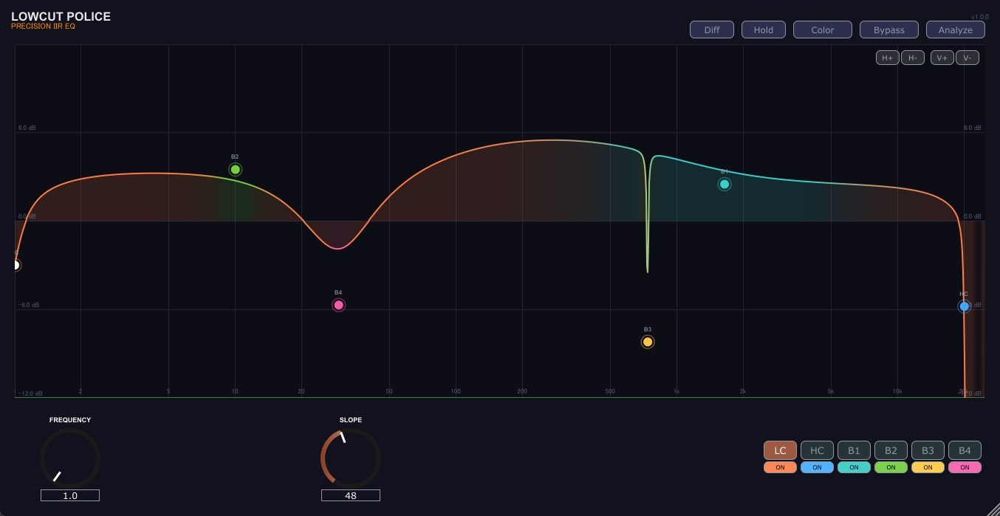

<!DOCTYPE html>
<html lang="ja">
<head>
  <meta charset="UTF-8" />
  <meta name="viewport" content="width=device-width, initial-scale=1.0" />
  <title>LowCut Police — OTODESK | Minimum-Phase IIR Highpass + Ultra-High-Res Analyzer</title>
  <link rel="preconnect" href="https://fonts.googleapis.com" />
  <link href="https://fonts.googleapis.com/css2?family=Geist+Mono:wght@300;400;500;600&family=Geist:wght@300;400;500;600;700;800&display=swap" rel="stylesheet" />
  <style>
    *, *::before, *::after { box-sizing: border-box; margin: 0; padding: 0; }
    :root {
      --bg: #050507;
      --bg2: #0c0c0f;
      --bg3: #111116;
      --ink: #e8e6de;
      --dim: #64635e;
      --dim2: #888;
      --rule: rgba(255,255,255,0.06);
      --accent: #ff6b4a;
      --accent2: #ff9070;
      --mono: "Geist Mono", monospace;
      --sans: "Geist", system-ui, sans-serif;
    }
    html { scroll-behavior: smooth; }
    body { background: var(--bg); color: var(--ink); font-family: var(--sans); -webkit-font-smoothing: antialiased; overflow-x: hidden; }
    a { color: inherit; text-decoration: none; }
    img { display: block; }

    /* NAV */
    .nav { position: fixed; top: 0; left: 0; right: 0; z-index: 100; display: flex; justify-content: space-between; align-items: center; padding: 20px 48px; background: rgba(5,5,7,0.88); backdrop-filter: blur(14px); border-bottom: 1px solid var(--rule); }
    .nav-logo { font-family: var(--mono); font-size: 13px; letter-spacing: 0.14em; color: var(--dim2); }
    .nav-logo span { color: var(--ink); }
    .nav-right { display: flex; align-items: center; gap: 24px; }
    .nav-back { font-family: var(--mono); font-size: 12px; color: var(--dim2); letter-spacing: 0.05em; }
    .nav-back:hover { color: var(--ink); }
    .lang-btn { background: none; border: 1px solid var(--rule); color: var(--dim2); font-family: var(--mono); font-size: 11px; padding: 5px 10px; cursor: pointer; letter-spacing: 0.08em; transition: all 0.2s; }
    .lang-btn.active { border-color: var(--accent); color: var(--accent); }
    /* ANALYZER VIZ */
    .analyzer-vis { position: relative; height: 140px; background: var(--bg3); border: 1px solid var(--rule); overflow: hidden; margin-bottom: 8px; }
    .analyzer-bars { display: flex; align-items: flex-end; gap: 1px; height: 100%; padding: 8px 8px 0; }
    .a-bar { flex: 1; border-radius: 1px 1px 0 0; min-width: 1px; }
    .analyzer-readout { position: absolute; top: 8px; right: 10px; font-family: var(--mono); font-size: 10px; color: var(--accent); letter-spacing: 0.1em; }
    .freq-ticks { display: flex; justify-content: space-between; padding: 4px 8px; font-family: var(--mono); font-size: 9px; color: var(--dim); margin-bottom: 24px; }

    /* HERO */
    .hero { position: relative; min-height: 100vh; display: flex; flex-direction: column; justify-content: flex-end; padding: 0 0 88px; overflow: hidden; }
    .hero-bg { position: absolute; inset: 0; }
    .hero-bg img { width: 100%; height: 100%; object-fit: cover; object-position: top center; opacity: 0.22; }
    .hero-bg-grad { position: absolute; inset: 0; background: linear-gradient(to bottom, rgba(5,5,7,0.3) 0%, rgba(5,5,7,0.5) 35%, rgba(5,5,7,0.95) 78%, var(--bg) 100%); }
    .hero-content { position: relative; max-width: 1100px; margin: 0 auto; padding: 0 48px; width: 100%; }
    .hero-badge { display: inline-flex; align-items: center; gap: 10px; font-family: var(--mono); font-size: 11px; letter-spacing: 0.14em; color: var(--accent); margin-bottom: 32px; padding: 7px 16px; border: 1px solid rgba(255,107,74,0.35); background: rgba(255,107,74,0.07); }
    .hero-badge-dot { width: 7px; height: 7px; border-radius: 50%; background: var(--accent); box-shadow: 0 0 10px var(--accent); }
    .hero-eyebrow { font-family: var(--mono); font-size: 11px; letter-spacing: 0.2em; color: var(--dim2); margin-bottom: 16px; }
    .hero-title { font-size: clamp(48px, 7vw, 92px); font-weight: 800; line-height: 0.95; letter-spacing: -0.04em; margin-bottom: 28px; }
    .hero-title .ac { color: var(--accent); }
    .hero-sub { font-size: 17px; color: var(--dim2); max-width: 560px; line-height: 1.75; font-weight: 300; margin-bottom: 36px; }
    .hero-sub em { color: var(--ink); font-style: normal; font-weight: 500; }
    .hero-cta-row { display: flex; align-items: center; gap: 12px; flex-wrap: wrap; margin-bottom: 52px; }
    .btn-primary { display: inline-flex; align-items: center; gap: 8px; padding: 14px 28px; font-family: var(--mono); font-size: 13px; letter-spacing: 0.06em; border: 1px solid var(--accent); color: var(--bg); background: var(--accent); font-weight: 700; }
    .btn-primary:hover { background: var(--accent2); border-color: var(--accent2); }
    .btn-gh { display: inline-flex; align-items: center; gap: 8px; padding: 14px 28px; font-family: var(--mono); font-size: 13px; letter-spacing: 0.06em; border: 1px solid var(--rule); color: var(--dim2); }
    .btn-gh:hover { border-color: var(--ink); color: var(--ink); }
    .hero-meta { display: flex; gap: 36px; flex-wrap: wrap; }
    .hero-meta-item { font-family: var(--mono); font-size: 11px; color: var(--dim); letter-spacing: 0.06em; }
    .hero-meta-item span { color: var(--ink); margin-left: 6px; }

    /* SECTION */
    .section { max-width: 1100px; margin: 0 auto; padding: 96px 48px; }
    .section-eyebrow { font-family: var(--mono); font-size: 11px; letter-spacing: 0.14em; color: var(--dim2); margin-bottom: 18px; }
    .section-h { font-size: clamp(28px, 3.5vw, 48px); font-weight: 700; line-height: 1.1; letter-spacing: -0.03em; margin-bottom: 48px; }
    .ac-text { color: var(--accent); }
    .divider { border: none; border-top: 1px solid var(--rule); max-width: 1100px; margin: 0 auto; }

    /* VIDEO */
    .video-wrap { position: relative; padding-bottom: 56.25%; height: 0; overflow: hidden; background: var(--bg2); border: 1px solid var(--rule); }
    .video-wrap iframe { position: absolute; inset: 0; width: 100%; height: 100%; border: none; }

    /* SCREENSHOT */
    .shot-wrap { overflow: hidden; background: var(--bg2); border: 1px solid var(--rule); }
    .shot-wrap img { width: 100%; height: auto; display: block; }

    /* CONCEPT CARDS */
    .concept-grid { display: grid; grid-template-columns: 1fr 1fr; gap: 2px; background: var(--rule); border: 1px solid var(--rule); margin-bottom: 48px; }
    .concept-card { background: var(--bg2); padding: 36px 28px; }
    .concept-card-num { font-family: var(--mono); font-size: 10px; color: var(--dim); letter-spacing: 0.14em; margin-bottom: 14px; }
    .concept-card-title { font-size: 20px; font-weight: 700; margin-bottom: 10px; letter-spacing: -0.02em; }
    .concept-card-title .ac { color: var(--accent); }
    .concept-card-body { font-size: 13px; color: var(--dim2); line-height: 1.75; }
    .concept-card-body em { color: var(--ink); font-style: normal; }

    /* PHASE VIZ */
    .phase-box { background: var(--bg2); border: 1px solid var(--rule); padding: 36px 32px; margin-bottom: 48px; }
    .phase-label { font-family: var(--mono); font-size: 10px; letter-spacing: 0.12em; color: var(--dim2); margin-bottom: 20px; }
    .phase-rows { display: flex; flex-direction: column; gap: 18px; }
    .phase-row { display: flex; align-items: center; gap: 20px; }
    .phase-row-label { font-family: var(--mono); font-size: 10px; color: var(--dim2); width: 120px; flex-shrink: 0; }
    .phase-row-bar { flex: 1; height: 24px; position: relative; background: var(--bg3); overflow: hidden; }
    .phase-fill { height: 100%; transition: width 0.5s ease; }
    .phase-marker { position: absolute; top: 0; bottom: 0; width: 2px; background: rgba(255,255,255,0.15); }
    .phase-row-val { font-family: var(--mono); font-size: 11px; color: var(--dim2); width: 60px; text-align: right; flex-shrink: 0; }
    .phase-row-val.good { color: var(--accent); }

    /* FEATURES LIST */
    .feat-grid { display: grid; grid-template-columns: 1fr 1fr 1fr; gap: 2px; background: var(--rule); border: 1px solid var(--rule); }
    .feat-card { background: var(--bg2); padding: 28px 22px; }
    .feat-icon { font-size: 22px; margin-bottom: 14px; }
    .feat-title { font-size: 15px; font-weight: 700; margin-bottom: 8px; letter-spacing: -0.01em; }
    .feat-body { font-size: 13px; color: var(--dim2); line-height: 1.65; }

    /* SPECS */
    .specs-grid { display: grid; grid-template-columns: 1fr 1fr; gap: 48px; }
    .spec-group h3 { font-family: var(--mono); font-size: 10px; letter-spacing: 0.14em; color: var(--dim); margin-bottom: 20px; }
    .spec-row { display: flex; justify-content: space-between; align-items: baseline; padding: 11px 0; border-bottom: 1px solid var(--rule); gap: 16px; }
    .spec-k { font-family: var(--mono); font-size: 12px; color: var(--dim2); }
    .spec-v { font-family: var(--mono); font-size: 12px; color: var(--ink); text-align: right; }

    /* CTA */
    .cta-section { background: var(--bg2); border-top: 1px solid var(--rule); border-bottom: 1px solid var(--rule); padding: 108px 48px; text-align: center; }
    .cta-inner { max-width: 600px; margin: 0 auto; }
    .cta-badge { display: inline-block; font-family: var(--mono); font-size: 12px; letter-spacing: 0.12em; color: var(--accent); padding: 10px 28px; border: 1px solid rgba(255,107,74,0.35); background: rgba(255,107,74,0.07); margin-bottom: 32px; }
    .cta-title { font-size: clamp(32px, 5vw, 60px); font-weight: 800; line-height: 1.0; letter-spacing: -0.04em; margin-bottom: 20px; }
    .cta-sub { font-size: 16px; color: var(--dim2); line-height: 1.75; margin-bottom: 44px; }
    .cta-links { display: flex; gap: 14px; justify-content: center; flex-wrap: wrap; }

    /* FOOTER */
    .page-footer { padding: 44px 48px; display: flex; justify-content: space-between; align-items: center; border-top: 1px solid var(--rule); }
    .footer-brand { font-family: var(--mono); font-size: 12px; color: var(--dim); }
    .footer-back { font-family: var(--mono); font-size: 12px; color: var(--dim2); }
    .footer-back:hover { color: var(--ink); }

    @media (max-width: 800px) {
      .nav { padding: 16px 20px; }
      .hero-content, .section { padding-left: 20px; padding-right: 20px; }
      .concept-grid, .specs-grid { grid-template-columns: 1fr; }
      .feat-grid { grid-template-columns: 1fr 1fr; }
      .phase-row-label { width: 80px; font-size: 9px; }
      .page-footer { flex-direction: column; gap: 16px; text-align: center; }
      .cta-section { padding: 72px 20px; }
    }
    @media (max-width: 500px) {
      .feat-grid { grid-template-columns: 1fr; }
    }
  </style>
</head>
<body>
<div id="root"></div>
<script src="https://unpkg.com/react@18.3.1/umd/react.development.js" integrity="sha384-hD6/rw4ppMLGNu3tX5cjIb+uRZ7UkRJ6BPkLpg4hAu/6onKUg4lLsHAs9EBPT82L" crossorigin="anonymous"></script>
<script src="https://unpkg.com/react-dom@18.3.1/umd/react-dom.development.js" integrity="sha384-u6aeetuaXnQ38mYT8rp6sbXaQe3NL9t+IBXmnYxwkUI2Hw4bsp2Wvmx4yRQF1uAm" crossorigin="anonymous"></script>
<script src="https://unpkg.com/@babel/standalone@7.29.0/babel.min.js" integrity="sha384-m08KidiNqLdpJqLq95G/LEi8Qvjl/xUYll3QILypMoQ65QorJ9Lvtp2RXYGBFj1y" crossorigin="anonymous"></script>
<script type="text/babel">
  function useLang() {
    var [lang, setLang] = React.useState(function() {
      return localStorage.getItem("otodesk-lang") || "jp";
    });
    var toggle = function() {
      var next = lang === "jp" ? "en" : "jp";
      localStorage.setItem("otodesk-lang", next);
      setLang(next);
    };
    return [lang, toggle];
  }

  function Nav({ lang, toggle }) {
    return (
      <nav className="nav">
        <a href="index.html" className="nav-logo">OTODE<span>SK</span></a>
        <div className="nav-right">
          <a href="index.html" className="nav-back">← {lang === "jp" ? "一覧に戻る" : "Back to index"}</a>
          <button className={"lang-btn" + (lang === "jp" ? " active" : "")} onClick={toggle}>JP</button>
          <button className={"lang-btn" + (lang === "en" ? " active" : "")} onClick={toggle}>EN</button>
        </div>
      </nav>
    );
  }

  function Hero({ lang }) {
    return (
      <section className="hero">
        <div className="hero-bg">
          
          <div className="hero-bg-grad" />
        </div>
        <div className="hero-content">
          <div className="hero-badge">
            <span className="hero-badge-dot" />
            {lang === "jp" ? "VST3 · ミニマムフェーズ IIR · 2026.7.4 リリース" : "VST3 · Minimum-Phase IIR · Released 2026.7.4"}
          </div>
          <div className="hero-eyebrow">LOWCUT POLICE (HighPrecisionEQ) — OTODESK / 2026</div>
          <h1 className="hero-title">
            {lang === "jp"
              ? <><span className="ac">低域を</span><br />精確に制御する。</>
              : <><span className="ac">Precision</span><br />low-end control.</>}
          </h1>
          <p className="hero-sub">
            {lang === "jp"
              ? <><em>ミニマムフェーズ IIR ハイパス＋1Hz まで見える超高解像度アナライザー。</em>低域の問題をクリアに可視化し、絶対的な精度でクリーンアップする。高性能・プロフェッショナルグレードの音響プラグイン。完全無料。</>
              : <><em>Minimum-phase IIR highpass + ultra-high-resolution analyzer down to 1 Hz.</em> Visualize low-end problems with absolute clarity and clean them up with surgical precision. Professional grade. Completely free.</>
            }
          </p>
          <div className="hero-cta-row">
            <a href="https://github.com/OTODESK4193/HighPrecisionEQ/releases/tag/V1.0.0" target="_blank" rel="noreferrer" className="btn-primary">
              ↓ {lang === "jp" ? "無料ダウンロード" : "Free Download"}
            </a>
            <a href="https://github.com/OTODESK4193/HighPrecisionEQ" target="_blank" rel="noreferrer" className="btn-gh">GitHub ↗</a>
            <a href="https://youtu.be/_kCL2x8AicU" target="_blank" rel="noreferrer" className="btn-gh">▶ {lang === "jp" ? "動画を見る" : "Watch Video"}</a>
          </div>
          <div className="hero-meta">
            <div className="hero-meta-item">FORMAT<span>VST3</span></div>
            <div className="hero-meta-item">PLATFORM<span>Windows 64-bit</span></div>
            <div className="hero-meta-item">FILTER<span>Min-Phase IIR</span></div>
            <div className="hero-meta-item">ANALYZER<span>Down to 1 Hz</span></div>
            <div className="hero-meta-item">LICENSE<span>AGPLv3 — Free</span></div>
          </div>
        </div>
      </section>
    );
  }

  function VideoSection({ lang }) {
    return (
      <div className="section">
        <div className="section-eyebrow">— 01 / {lang === "jp" ? "紹介動画" : "INTRODUCTION VIDEO"}</div>
        <h2 className="section-h">
          {lang === "jp"
            ? <><span className="ac-text">動画</span>で見る LowCut Police</>
            : <>LowCut Police<br /><span className="ac-text">in action.</span></>
          }
        </h2>
        <div className="video-wrap">
          <iframe
            src="https://www.youtube.com/embed/_kCL2x8AicU"
            title="LowCut Police — OTODESK"
            allow="accelerometer; autoplay; clipboard-write; encrypted-media; gyroscope; picture-in-picture"
            allowFullScreen={true}
          />
        </div>
      </div>
    );
  }

  function Screenshot({ lang }) {
    return (
      <div className="section" style={{ paddingTop: 0 }}>
        <hr className="divider" style={{ maxWidth: "none", marginBottom: "96px" }} />
        <div className="section-eyebrow">— 02 / {lang === "jp" ? "スクリーンショット" : "SCREENSHOT"}</div>
        <h2 className="section-h">{lang === "jp" ? "シンプルに、精密に。" : "Simple. Precise."}</h2>
        <div className="shot-wrap">
          
        </div>
      </div>
    );
  }

  function Concept({ lang }) {
    var cards = [
      {
        num: "CONCEPT 01",
        title: { jp: <><span className="ac">ミニマムフェーズ</span> IIR ハイパス</>, en: <><span className="ac">Minimum-Phase</span> IIR Highpass</> },
        body: {
          jp: "ゼロレイテンシのミニマムフェーズ IIR フィルタエンジンを採用。カットオフ以下の帯域を絶対的な精度でクリーンアップする。高性能・プロフェッショナルグレードの音響プラグイン。",
          en: "Zero-latency minimum-phase IIR filter engine built for absolute precision. A high-performance, professional-grade audio plugin for cleaning up low-end frequencies with total accuracy."
        }
      },
      {
        num: "CONCEPT 02",
        title: { jp: <>1Hz まで見える<span className="ac">超高解像度アナライザー</span></>, en: <><span className="ac">Ultra-High-Res Analyzer</span> down to 1 Hz</> },
        body: {
          jp: "1 Hz まで表示できる超高解像度アナライザーを内蔵。通常のスペクトラムアナライザーでは見えない極低域の共鳴・マッドを可視化し、正確な処理を可能にする。見えない低域を、見えるようにする。",
          en: "Built-in ultra-high-resolution analyzer displays all the way down to 1 Hz — making the invisible low end visible so you can treat it accurately. See what other analyzers miss."
        }
      },
      {
        num: "CONCEPT 03",
        title: { jp: <>低域を<span className="ac">クリーンにする</span></>, en: <><span className="ac">Clean</span> Your Low End</> },
        body: {
          jp: "低域の問題を可視化し、精確に処理する。ミックスの土台を完全にクリーンにする、鋭利なプロフェッショナルツール。",
          en: "Visualize low-end problems and treat them with precision. A razor-sharp professional tool designed to make the foundation of your mix completely clean."
        }
      },
      {
        num: "CONCEPT 04",
        title: { jp: <>完全無料・<span className="ac">オープンソース</span></>, en: <>Free &amp; <span className="ac">Open-Source</span></> },
        body: {
          jp: "AGPLv3 ライセンスで完全無料公開。ソースコードは GitHub で公開しており、誰でも閲覧・改変・再配布できる。OTODESK の全プラグインはこの信念のもとに作られている。",
          en: "Released for free under AGPLv3. Full source code on GitHub — anyone can read, modify, and redistribute. Every OTODESK plugin is built on this principle."
        }
      }
    ];
    return (
      <div className="section" style={{ paddingTop: 0 }}>
        <div className="section-eyebrow">— 03 / {lang === "jp" ? "コンセプト" : "CONCEPT"}</div>
        <h2 className="section-h">
          {lang === "jp"
            ? <>なぜ<span className="ac-text">ミニマムフェーズ</span>なのか。</>
            : <>Why <span className="ac-text">minimum-phase</span>?</>
          }
        </h2>
        <div className="concept-grid">
          {cards.map(function(c) {
            return (
              <div key={c.num} className="concept-card">
                <div className="concept-card-num">{c.num}</div>
                <div className="concept-card-title">{c.title[lang]}</div>
                <div className="concept-card-body">{c.body[lang]}</div>
              </div>
            );
          })}
        </div>
      </div>
    );
  }

  function AnalyzerViz() {
    var bands = 80;
    var heights = React.useMemo(function() {
      return Array.from({ length: bands }, function(_, i) {
        var f = i / bands;
        var h = f < 0.08 ? 0.9 - f * 3 + Math.random() * 0.1
              : f < 0.2  ? 0.65 - f * 1.5 + Math.random() * 0.15
              : f < 0.5  ? 0.38 - f * 0.4 + Math.random() * 0.18
              : 0.12 + Math.random() * 0.1;
        return Math.max(0.03, Math.min(0.95, h));
      });
    }, []);
    var getColor = function(i) {
      var f = i / bands;
      if (f < 0.1) return "rgba(255,60,60,0.85)";
      if (f < 0.25) return "rgba(255,140,40,0.85)";
      if (f < 0.5) return "rgba(255,107,74,0.85)";
      return "rgba(180,120,80,0.6)";
    };
    return (
      <div className="analyzer-vis">
        <div className="analyzer-bars">
          {heights.map(function(h, i) {
            return <div key={i} className="a-bar" style={{ height: (h * 100) + "%", background: getColor(i) }} />;
          })}
        </div>
        <div className="analyzer-readout">1 Hz — 20 kHz · HIGH-RES</div>
      </div>
    );
  }

  function PhaseViz({ lang }) {
    var rows = [
      { label: lang === "jp" ? "Linear Phase EQ" : "Linear Phase EQ", phase: 80, color: "rgba(255,180,50,0.7)", val: lang === "jp" ? "レイテンシ大" : "High latency", good: false },
      { label: lang === "jp" ? "汎用 IIR EQ" : "Generic IIR EQ", phase: 55, color: "rgba(255,70,70,0.7)", val: lang === "jp" ? "位相歪みあり" : "Phase distortion", good: false },
      { label: "LowCut Police", phase: 18, color: "rgba(255,107,74,0.9)", val: lang === "jp" ? "Min-Phase・ゼロ遅延" : "Min-Phase · 0 latency", good: true }
    ];
    return (
      <div className="section" style={{ paddingTop: 0 }}>
        <div className="section-eyebrow">— 04 / {lang === "jp" ? "アナライザー & フィルター" : "ANALYZER & FILTER"}</div>
        <h2 className="section-h">
          {lang === "jp"
            ? <><span className="ac-text">1Hz</span> まで可視化。<br />ミニマムフェーズで精確に除去。</>
            : <>Visualize down to <span className="ac-text">1 Hz.</span><br />Remove with minimum-phase precision.</>
          }
        </h2>
        <AnalyzerViz />
        <div className="freq-ticks">
          {["1Hz","5","10","20","50","100","200","500","1k","5k","20k"].map(function(f) { return <span key={f}>{f}</span>; })}
        </div>
        <div className="phase-box">
          <div className="phase-label">{lang === "jp" ? "各フィルタータイプの特性比較" : "FILTER TYPE COMPARISON"}</div>
          <div className="phase-rows">
            {rows.map(function(r) {
              return (
                <div key={r.label} className="phase-row">
                  <div className="phase-row-label">{r.label}</div>
                  <div className="phase-row-bar">
                    <div className="phase-fill" style={{ width: (r.phase / 80 * 100) + "%", background: r.color }} />
                  </div>
                  <div className={"phase-row-val" + (r.good ? " good" : "")}>{r.val}</div>
                </div>
              );
            })}
          </div>
        </div>
        <div style={{ fontSize: "13px", color: "var(--dim2)", lineHeight: 1.75, marginTop: "24px" }}>
          {lang === "jp"
            ? "Linear Phase EQ はレイテンシを犠牲にして位相を揃えます。ミニマムフェーズ IIR はゼロレイテンシのまま最小限の位相変化で動作し、低域クリーンアップに最も適した選択です。"
            : "Linear phase EQ sacrifices latency. Generic IIR distorts phase. Minimum-phase IIR operates at zero latency with minimal phase change — the ideal choice for low-end cleanup."
          }
        </div>
      </div>
    );
  }

  function Features({ lang }) {
    var feats = [
      { icon: "⚡", title: { jp: "ゼロレイテンシ", en: "Zero Latency" }, body: { jp: "ホストに 0 サンプルのレイテンシを報告。リアルタイム演奏・録音・モニタリングで遅延を感じさせない。", en: "Reports 0 samples of latency to the host. No delay felt during live performance, recording, or monitoring." } },
      { icon: "🔬", title: { jp: "1Hz まで見えるアナライザー", en: "Analyzer to 1 Hz" }, body: { jp: "超高解像度アナライザーが 1 Hz まで表示。通常では見えない極低域の共鳴・マッドを可視化し、正確に処置できる。", en: "Ultra-high-resolution analyzer displays all the way down to 1 Hz — making the invisible low end visible for accurate treatment." } },
      { icon: "🎯", title: { jp: "ミニマムフェーズ IIR", en: "Minimum-Phase IIR" }, body: { jp: "ミニマムフェーズ IIR フィルターはゼロレイテンシで動作し、低域クリーンアップに最適な位相特性を持つ。", en: "Minimum-phase IIR operates at zero latency with the ideal phase response for low-end cleanup." } },
      { icon: "🪶", title: { jp: "軽量CPU負荷", en: "Lightweight CPU" }, body: { jp: "オーディオスレッドはロックフリー・ゼロアロケーション設計。多数のトラックに挿しても問題なし。", en: "Lock-free, zero-allocation audio thread. Insert on as many tracks as you need." } },
      { icon: "🆓", title: { jp: "完全無料・AGPLv3", en: "Free · AGPLv3" }, body: { jp: "永久に無料。ソースコードも公開。商用利用も条件を満たせば可能。", en: "Free forever. Source open. Commercial use permitted under AGPLv3 terms." } },
      { icon: "🔧", title: { jp: "Windows VST3", en: "Windows VST3" }, body: { jp: "64bit Windows 対応 VST3 フォーマット。Ableton Live で動作確認済み。他の DAW はお試しください。", en: "64-bit Windows VST3. Verified on Ableton Live. Try it in your DAW." } }
    ];
    return (
      <div className="section" style={{ paddingTop: 0 }}>
        <div className="section-eyebrow">— 05 / {lang === "jp" ? "機能一覧" : "FEATURES"}</div>
        <h2 className="section-h">{lang === "jp" ? "シンプルに、強力に。" : "Simple. Powerful."}</h2>
        <div className="feat-grid">
          {feats.map(function(f) {
            return (
              <div key={f.title.jp} className="feat-card">
                <div className="feat-icon">{f.icon}</div>
                <div className="feat-title">{f.title[lang]}</div>
                <div className="feat-body">{f.body[lang]}</div>
              </div>
            );
          })}
        </div>
      </div>
    );
  }

  function Specs({ lang }) {
    var sys = [
      { k: "OS", v: "Windows 10 / 11 (64-bit)" },
      { k: "FORMAT", v: "VST3 (64-bit)" },
      { k: "HOST", v: "Ableton Live (verified)" },
      { k: "LICENSE", v: "AGPLv3 — Free" },
      { k: "VERSION", v: "1.0.0" },
      { k: "RELEASE", v: "2026.07.04" }
    ];
    var dsp = [
      { k: lang === "jp" ? "フィルタタイプ" : "Filter type", v: "Minimum-Phase IIR Highpass" },
      { k: lang === "jp" ? "アナライザー" : "Analyzer", v: lang === "jp" ? "超高解像度・1Hz まで表示" : "Ultra-high-res · down to 1 Hz" },
      { k: lang === "jp" ? "レイテンシ" : "Latency", v: "Zero (0 samples)" },
      { k: lang === "jp" ? "用途" : "Use case", v: lang === "jp" ? "低域クリーンアップ・ハイパスフィルタリング" : "Low-end cleanup & highpass filtering" },
      { k: lang === "jp" ? "スレッドモデル" : "Thread model", v: "Lock-free, zero alloc" },
      { k: lang === "jp" ? "マルチインスタンス" : "Multi-instance", v: lang === "jp" ? "完全独立・安定" : "Fully independent" }
    ];
    return (
      <div className="section" style={{ paddingTop: 0 }}>
        <div className="section-eyebrow">— 06 / {lang === "jp" ? "仕様" : "SPECIFICATIONS"}</div>
        <h2 className="section-h">{lang === "jp" ? "動作環境 & 技術仕様" : "System Requirements & Tech Specs"}</h2>
        <div className="specs-grid">
          <div>
            <div className="spec-group"><h3>{lang === "jp" ? "システム要件" : "SYSTEM REQUIREMENTS"}</h3>
              {sys.map(function(r) {
                return <div key={r.k} className="spec-row"><span className="spec-k">{r.k}</span><span className="spec-v">{r.v}</span></div>;
              })}
            </div>
          </div>
          <div>
            <div className="spec-group"><h3>{lang === "jp" ? "DSP / エンジン" : "DSP / ENGINE"}</h3>
              {dsp.map(function(r) {
                return <div key={r.k} className="spec-row"><span className="spec-k">{r.k}</span><span className="spec-v">{r.v}</span></div>;
              })}
            </div>
          </div>
        </div>
      </div>
    );
  }

  function CTA({ lang }) {
    return (
      <div className="cta-section">
        <div className="cta-inner">
          <div className="cta-badge">✦ {lang === "jp" ? "7/4 リリース — 完全無料" : "RELEASED 7/4 — COMPLETELY FREE"}</div>
          <h2 className="cta-title">
            {lang === "jp"
              ? <><span style={{ color: "var(--accent)" }}>低域を</span>、<br />クリーンにせよ。</>
              : <>Clean your<br /><span style={{ color: "var(--accent)" }}>low end.</span></>
            }
          </h2>
          <p className="cta-sub">
            {lang === "jp"
              ? "ダウンロードは無料。GitHub からすぐに入手できます。"
              : "Free to download, right now on GitHub."}
          </p>
          <div className="cta-links">
            <a href="https://github.com/OTODESK4193/HighPrecisionEQ/releases/tag/V1.0.0" target="_blank" rel="noreferrer" className="btn-primary">
              ↓ {lang === "jp" ? "無料ダウンロード — v1.0.0" : "Free Download — v1.0.0"}
            </a>
            <a href="https://github.com/OTODESK4193/HighPrecisionEQ" target="_blank" rel="noreferrer" className="btn-gh">GitHub ↗</a>
          </div>
        </div>
      </div>
    );
  }

  function PageFooter({ lang }) {
    return (
      <footer className="page-footer">
        <span className="footer-brand">OTODESK © 2026 — AGPLv3</span>
        <a href="index.html" className="footer-back">← {lang === "jp" ? "全プラグイン一覧" : "All Plugins"}</a>
      </footer>
    );
  }

  function App() {
    var [lang, toggle] = useLang();
    return (
      <React.Fragment>
        <Nav lang={lang} toggle={toggle} />
        <Hero lang={lang} />
        <VideoSection lang={lang} />
        <Screenshot lang={lang} />
        <Concept lang={lang} />
        <PhaseViz lang={lang} />
        <Features lang={lang} />
        <Specs lang={lang} />
        <CTA lang={lang} />
        <PageFooter lang={lang} />
      </React.Fragment>
    );
  }

  ReactDOM.createRoot(document.getElementById("root")).render(React.createElement(App));
</script>
</body>
</html>
